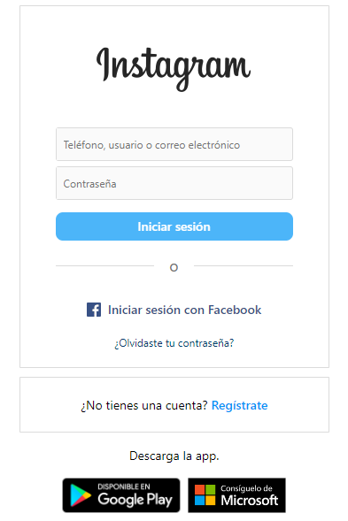
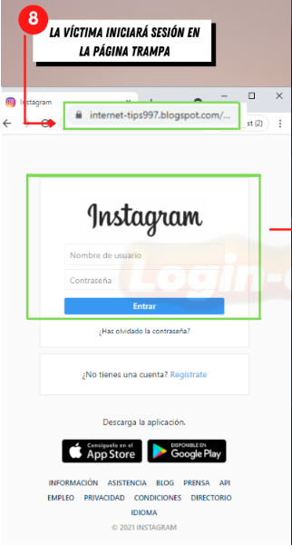
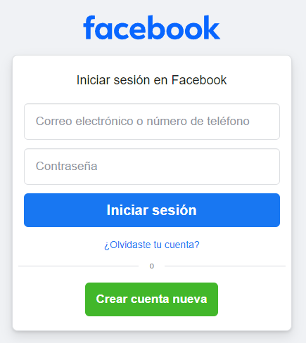
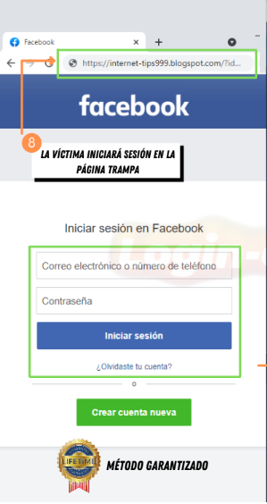
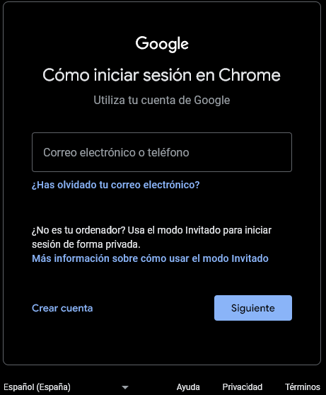
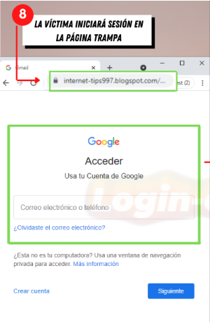
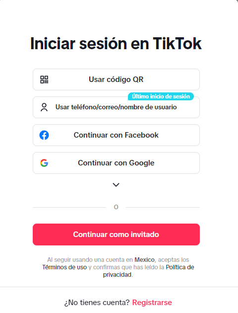
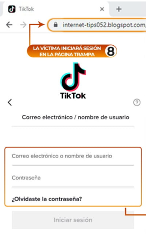
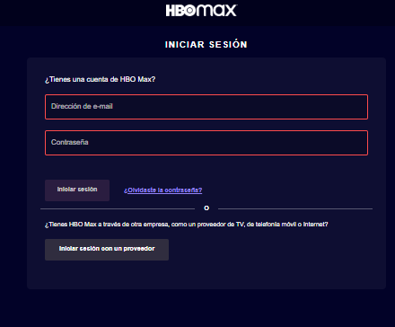

INSTAGRAM
Es una red social que dio sus primeros pasos en el año 2010 por los desarrolladores Kevin Systrom y Mike Krieger, la función principal de esta red es la de comunicar a través de imágenes y vídeos de corta duración.
El atractivo de esta red social en sus inicios fue la facilidad y variedad que había a la hora de aplicar filtros a las imágenes, de manera que se pudiera generar resultados muy atractivos a nivel visual.
Instagram es una red social diseñada para ser totalmente funcional en los dispositivos móviles, tanto para iOS (sistema operativo de Apple) como Android (sistema operativo de Google).
Cuenta con una versión de escritorio conocida como Instagram Web para poder usar la red social, pero desde sus inicios la versión web se encontraba muy limitada en comparación con la versión móvil.
Eso ha cambiado a día de hoy, y cada vez tienes más funcionalidades en tu versión desktop.
Por lo que se puede decir que Instagram es una red social creada específicamente para dispositivos móviles.
Instagram Veridico Ir al enlace |
Instagram Falso Ir al enlace |
Facebook
Facebook es una red social cuyo objetivo es conectar personas con personas: amigos, familiares, compañeros de trabajo o gente con aficiones comunes. Es una de las redes sociales con más usuarios, con cerca de 2.200 millones de personas registradas.
En Facebook los usuarios pueden interaccionar a través comentarios, mensajes privados, participación en grupos y páginas e incluso con emisiones de vídeo en directo a través de Facebook Live.
El funcionamiento de Facebook es similar al de cualquier otra red social, aunque esta oración deberíamos formularla al revés, ya que es esta la red social que marca los antecedentes y las condiciones que deben cumplir las demás.
En Facebook existen dos tipos de cuentas: las de cualquier usuario normal y corriente y la que pueden abrir las empresas. Las primeras son totalmente gratuitas y permiten la comunicación fluida entre personas reales; las segundas sirven para ofrecer productos o servicios y mantener contacto cercano entre empresas y clientes. A su vez en las cuentas de empresas existen las versiones gratuitas y las pagas, estas últimas ofrecen más prestaciones, permitiendo una mayor visibilidad a la compañía pertinente.
Facebook Veridico Ir al enlace |
Facebook Falso Ir al enlace |
Gmail
Google Gmail es un servicio de correo electrónico desarrollado por la empresa Google. Este se caracteriza por ser totalmente gratuito y multidispositivo, de forma que podemos acceder a él desde cualquier dispositivo siempre que dispongamos de una conexión a Internet.
Gmail se caracteriza por una interfaz sencilla, facil de utilizar para cualquier tipo de usuario e integrada con el motor de búsqueda de Google. Se basa en un lenguaje de programación que combina JavaScript y XML, conocido como Ajax de forma que se asemeja en muchos puntos a los programas de correo electrónico instalados localmente. Gmail es uno de los correos que más memoria ofrece a sus usuarios de manera gratuita, en la actualidad esa cifra llega los 15GB.
Una de las principales virtudes de Gmail es su diversidad de funciones en lo que a búsqueda, filtrado y clasificación de mensajes se refiere, con un almacenamiento de correo centralizado que nos permite etiquetar los correos recibidos y agruparlos en varias subcategorías.
Entre las funciones añadidas que Google ha ido incorporando a lo largo de los años se encuentra un chat para usuarios, un servicio de llamadas telefónicas, función anti-spam y bloqueo de usuarios, además de ser una herramienta muy relevante para el SEO puesto que los resultados del Gmail aparecen en los SERPs de la búsqueda personalizada.
Gmail Veridico Ir al enlace |
Gmail Falso Ir al enlace |
TikTok
TikTok (conocido en China como Douyin) es una aplicación para compartir vídeos de corta duración muy famosa entre adolescentes de todo el mundo. Los usuarios utilizan esta app principalmente para grabarse a sí mismos cantando en playback una canción y moviendo los dedos de un modo muy particular denominado finger dance.
El funcionamiento de TikTok es similar al de otras redes sociales. Para crear un perfil y comenzar a compartir vídeos basta con tener una cuenta de Gmail. Los vídeos pueden tener hasta 10 segundos y es posible grabarlas en varias tomas. De este modo, solo se graba mientras se tiene el botón pulsado y existe la posibilidad de hacer después un pequeño montaje.
Es posible ralentizar, acelerar y modificar con filtros los vídeos una vez grabados. Otra de las opciones de Tik Tok es la de ver las reacciones de los usuarios mientras observan un vídeo de otro en una pequeña ventana.
Los usuarios pueden seguirse entre ellos, dar likes a los vídeos e incluso comentar en directo. Una de las principales críticas a TikTok, además de la corta edad de sus usuarios, es que no permite ajustes de privacidad parciales. Los perfiles tienen que ser necesariamente totalmente públicos o totalmente privados.
La mayoría de las personas se graban haciendo una especie de vídeo musical, con una música de fondo que previamente han elegido del extenso banco de canciones de todos los géneros que ofrece la aplicación.
TikTok para influencers
Tiktok se ha convertido en una de las plataformas más virales. En ella los influencers de esta red, denominados tiktokers pueden lograr un gran alcance creando videos y compartiendo contenidos. Los tiktokers más influyentes pueden conseguir ingresos gracias al pago directo de TikTok por sus contenidos y por la promoción o venta directa de productos.TikTok para empresas
TikTok cuenta también con una unidad de negocio para empresas: Tiktok for Business. Proporciona a las marcas y profesionales del marketing la posibilidad de crear contenido específicos para los usuarios de la plataforma. Permite a su vez crearcampañas de TikTok Ads con una segmentación muy precisa a sus millones de usuarios.
TikTok Veridico Ir al enlace |
TikTok Falso Ir al enlace |
Messenger
Esta aplicación se ha conseguido posicionar como una de las mas utilizadas en todo el mundo, gracias también al éxito de la propia Facebook y la integración que posee con ella. En el artículo de hoy, te explicamos qué es Facebook Messenger y cómo funciona, para que conozcas a fondo sus funcionalidades más importantes.
Facebook Messenger es la aplicación de mensajería de la red social Facebook y se encuentra desarrollada por Meta. Actualmente se encuentra disponible para su descarga tanto en Android como iOS.
Su nombre originalmente era Facebook Chat y se lanzó al público en 2008. Con Facebook Messenger, podemos mandar mensajes a los usuarios de Facebook, realizar videollamadas, chat grupales y llamadas de voz, entre otros. Desde 2015, las empresas dentro de Facebook pueden interactuar con sus usuarios a través de Facebook Messenger y viceversa, además de permitir la integración de aplicaciones de terceros con el servicio.
Facebook Messenger también tiene soporte integrado para recibir y enviar SMS, además de poder reproducir juegos incluso. Una de las últimas funcionalidades añadidas a Facebook Messenger fue Messenger Rooms. Gracias a esta característica, podemos realizar videochats de hasta 50 personas a la vez.
sta aplicación de mensajería ha tenido sus mas y sus menos a lo largo de su historia, pero siempre se ha visto respaldada por la gran comunidad que forma Facebook (o Meta) en estos días. El amplio abanico de opciones que ofrece lo hacen una opción muy buena para aquellos que quieran disfrutar de una experiencia lo más completa posible.
Messenger Veridico |
Messenger Falso |
Snapchat
Snapchat funciona de forma similar a una app de mensajería instantánea, permitiéndote añadir contactos y enviarles mensajes en forma de fotos o vídeos de forma individual o a grupos. La principal diferencia es que tú seleccionas el tiempo que el receptor podrá ver ese mensaje (de 1 a 10 segundos) antes de que se destruya.
Es decir, mandas tu foto, la editas si quieres (puedes añadirle un pequeño texto o dibujar encima) y la mandas a quien quieras especificando el tiempo que podrá acceder a ella. Después al usuario se le notifica que tiene un mensaje y puede verlo presionando sobre el mensaje durante el tiempo especificado por el que lo envió (si deja de presionar, deja de verlo).De esta forma es más difícil que el usuario capture una imagen o foto del pantallazo en sí.
Snapchat es quizás la app más rápida a la hora de sacar una foto con tu móvil y compartirla, por lo que sus ventajas es que te permite compartir de forma rápida, efímera e imperfecta, ya que al ser temporal no existe esa obsesión por la perfección que sí se da en otras herramientas como Instagram. También las marcas están usando Snapchat con diferentes fines.
Snapchat Veridico |
Snapchat Falso |
Outlook
Outlook es un gestor de información personal desarrollado por Microsoft, disponible como parte de la suite Microsoft 365 (antes Office 365 ).
Microsoft Outlook puede ser utilizado como aplicación independiente para trabajar día y noche o con Microsoft Exchange Server para dar servicios a múltiples usuarios dentro de una organización, tales como buzones compartidos, calendarios comunes, etc.
Microsoft Outlook es de Microsoft. aplicación de cliente de correo electrónico, que se utiliza principalmente para gestionar el correo electrónico. Sin embargo, también tiene otras características y funciones que lo convierten en una herramienta valiosa para cualquiera que busque organizar su flujo de trabajo o sus datos personales.
Algunas características clave incluyen la programación de citas y reuniones, la gestión de contactos y la organización de tareas y listas de tareas pendientes. También viene con una excelente función de búsqueda que facilita la búsqueda de correos electrónicos y otra información. Básicamente, puede ayudarlo a mantenerse organizado y productivo en su trabajo y vida personal.
Outlook Veridico![Imagen Izquierda]() |
Outlook Falso |
Youtube
Youtubees un sitio web para compartir vídeos, muy popular y gratuito, que permite a los usuarios registrados subir y compartir clips de vídeo en línea. Para ver los vídeos que no es obligatorio a registrarse. Lanzado en 2005 por antiguos empleados de PayPal, fue adquirida por Google Inc. en octubre de 2006 por 1.65 mil millones de dólares en acciones de Google.
El sitio permite a los usuarios subir, ver, evaluar, compartir y comentar los vídeos, y hace uso de tecnología WebM , H.264 / MPEG- 4 AVC y Adobe Flash Video para mostrar una amplia variedad de vídeos generados por los usuarios y organizaciones. El contenido disponible incluye clips de vídeo, cortes de televisión, videos musicales, avances de películas y otros contenidos como blogs de video, vídeos cortos originales y videos educativos.
Conserva una logística que accede a localizar cualquier vídeo por medio de las etiquetas de metadato, títulos y descripciones que los usuarios destinan a sus vídeos, pero cuyo uso está limitado únicamente a los vídeos instalados en YouTube. A partir de adquirir de YouTube por parte de Google, Google Video se comenzó a agregar a sus indagaciones los temas de YouTube.
Al incorporar su interfaz a diferentes idiomas , donde podemos encontrar el español, se produjo un suceso de gran importancia en junio de 2007.
Youtube Veridico |
Youtube Falso |
Twitter o ahora X
Twitter es una herramienta de mensajería social gratuita que permite a los usuarios mantenerse conectados a través de mensajes de texto breves de un máximo de hasta 140 caracteres de longitud. red social Twitter se basa en responder a la pregunta «¿Qué estás haciendo?». A continuación, se publican pensamientos, observaciones e idas y venidas durante el día.
La actualización de estos mensajes se publica en la página de perfil de Twitter del usuario a través de mensajes de texto SMS, el sitio web de Twitter, mensajería instantánea, RSS, correo electrónico o a través de otras aplicaciones y sitios sociales, como Facebook.Los usuarios registrados en Twitter pueden leer y publicar tweets, pero los que no están registrados sólo pueden leerlos.
Twitter Veridico |
Twitter Falso |
Netflix
Netflix Es un servicio de transmisión o 'streaming' que permite ver una gran variedad de series, documentales y películas en cualquier dispositivo con acceso a internet como celulares, computadoras, tabletas o 'smart tv' mediante el pago de una tarifa fija mensual. Para empezar a usarlo, se debe abrir una cuenta en Netflix.
Netflix Veridico |
Netflix Falso |
Onlyfans
OnlyFans es una plataforma y aplicación en línea creada en 2016. Con ella, las personas pueden pagar por el contenido (fotos, videos y transmisiones en vivo) a través de una membresía mensual. El contenido es creado principalmente por YouTubers, entrenadores físicos, modelos, creadores de contenido y figuras públicas para monetizar su profesión. También es popular entre los creadores de contenido para adultos.
Con OnlyFans informando un aumento en las suscripciones desde principios de marzo de 2020, es una plataforma de la que quizás haya oído hablar. Sin embargo, existen preocupaciones sobre el lado oscuro de OnlyFans. Cada vez más jóvenes menores de edad utilizan esta plataforma para vender contenido sexualmente explícito de ellos mismos a cambio de dinero.
El sitio con sede en Gran Bretaña se volvió cada vez más popular entre las personas que estaban desempleadas o trabajaban desde casa durante la pandemia de coronavirus. Sin embargo, también es cada vez más popular entre las trabajadoras sexuales.
Onlyfans Veridico |
Onlyfans Falso |
Spotify
Spotify es un servicio de música en línea que permite a los usuarios escuchar canciones, álbumes y listas de reproducción de una gran variedad de artistas y géneros musicales. La plataforma ha revolucionado la forma en que las personas consumen música, gracias a su amplia biblioteca canciones y su algoritmo de recomendación que se adapta a los gustos y preferencias de cada usuario.
Además de permitir la escucha en línea, Spotify también ofrece la opción de descargar canciones para poder escucharlas offline en dispositivos móviles. Asimismo, la plataforma cuenta con varias funciones adicionales, como la creación de listas de reproducción personalizadas, la posibilidad de seguir a artistas y amigos, y la integración con otros dispositivos y aplicaciones.
Spotify se destaca en la industria musical gracias a su innovación constante y su capacidad para adaptarse a las necesidades de los usuarios. Se ha convertido en una herramienta esencial para los amantes de la música, y su influencia se extiende a otros campos, como los podcasts y la difusión de nuevos talentos musicales.
Spotify Veridico/2022/03/08/1646766702756.jpg) |
Spotify Falso |
Linkedin es una red social de gestion de contactos lanzada en el año 2003. A diferencia de otras redes como Facebook o Twitter, esta tiene un perfil mucho más profesionalizado, con un tono más serio y moderado, enfocado a la búsqueda de empleo, promoción de empresas, productos y eventos y relaciones comerciales.
Actualmente LinkedIn cuenta con más de 575 millones de usuarios registrados, más de 9 millones de empresas, disponible en 24 idiomas en 200 países. En 2016 Microsoft anunció la compra de la compañía por un valor de 26.200 millones de dólares.
Linkedin Veridico |
Linkedin Falso |
Primevideo
Prime Video es un servicio de reproducción en streaming de video ofrecido por Amazon. Los beneficios de Prime Video se incluyen con la membresía Amazon Prime. Con tu membresía, puedes ver cientos de programas y películas en tus dispositivos favoritos. Para empezar, visita Amazon.com/primevideo, o descarga la aplicación Prime Video en tu dispositivo móvil.
Primevideo Veridico |
PrimevideoFalso |
Skype
Skype es un software de comunicación a distancia mediante videollamadas, llamadas y texto, propiedad de la multinacional norteamericana Microsoft. Esta aplicación es multiplataforma y permite comunicarse a través de ordenadores, teléfonos móviles, tablets y otros dispositivos
Skype opera a través de un modelo P2P mediante un protocolo privado de telefonía VolP que permite comunicarse con una gran calidad en la llamada.Hoy en día Skype se ha convertido en una referencia del sector de las videollamadas, y cuenta con millones de usuarios diarios en todo el mundo.
Skype Veridico![Imagen Izquierda]() |
Skype Falso |
Yahoo
Yahoo es una de las principales empresas del sector de internet que dispone de un portal propio, buscador y otros servicios relacionados como correo electrónico, noticias, tiempo, etc. Se le considera una de las compañías pioneras en el desarrollo de la Red a nivel global por la importancia que llegó a adquirir antes de la explosión de Google y todos sus productos relacionados.
Yahoo nació como empresa en 1995 de la mano de Jerry Yang y David Filo y tiene su sede en Sunnyvale (California). Actualmente es propiedad de Verizon, que lo compró en 2017.
Yahoo Veridico![Imagen Izquierda]() Ir al enlace
Ir al enlace |
Yahoo Falso |
Kwai
Kwai es una red social creada en china que te permite ver y compartir videos cortos con personas de todo el mundo. Te informamos qué es y cómo funciona, cómo registrarte para ganar dinero con tus videos y la manera para cancelar tu cuenta.
Al igual que su contraparte, el uso de la aplicación es bastante sencillo y cualquier persona puede crear videos en Kwai. Sólo se requieren 3 pasos para compartir todos los contenidos:
- Graba un clip corto de un par de minutos.
- Edítalo con ayuda de todas las herramientas que la aplicación te ofrece.
- Súbelo para que la misma app te ayude a compartirlo con todos los usuarios que tiene esta red social.
Kwai Veridico![Imagen Izquierda]() |
Kwai Falso |
iCloud
icloud es una plataforma de servicios y almacenamiento en la nube, basado en lo que se conoce como “Cloud Computing” , propiedad de Apple. Este sistema permite centralizar toda la información que posee un usuario, para que, con tan solo una conexión a Internet, pueda ser compartida entre diferentes dispositivos Apple.
Desde el año 2011, los usuarios de los dispositivos de la multinacional norteamericana, en especial aquellos con sistema operativo iOS 5 (o superior), comenzaron a disfrutar de uno de los mejores sistemas de almacenamiento en la nube hasta el momento.
Su uso más conocido es sin duda poder disponer de un «disco duro virtual», en el que almacenar todos tus archivos, como te he mencionado ya anteriormente.
Es la razón por la que la mayoría de los usuarios, y también aquellos que no son usuarios, conocen este sistema.
iCloud Veridico![Imagen Izquierda]() |
iCloud Falso |
Twitch
Podría decirse que Twitch es plataforma social del momento. Se basa en la retransmisión de múltiples eventos, siendo su especialidad los videojuegos.
La misma plataforma se define como un sitio en donde las personas se reúnen para interactuar, hablar y crear su propio estilo de entretenimiento. Gracias a esto ha logrado destacar ante Youtube y Vimeo, que levan mucho más tiempo en el mercado.
El funcionamiento de Twitch es muy sencillo. La red social te da la posibilidad de ver y emitir transmisiones en vivo, pudiendo interactuar con la audiencia a través de un chat que ofrece la plataforma.
Al abrirlo pues verás muchas similitudes con otros sitios de videos como Youtube. En el centro apreciarán las opciones de transmisiones en directo en tiempo real. Además, la red te da recomendaciones según tus gustos.
Twitch Veridico![Imagen Izquierda]() |
Twitch Falso |
Habbo
Habbo es una comunidad virtual online donde puedes crear tu propio avatar, hacer amigos, chatear, construir salas y diseñar juegos. Empezó como un juego enfocado a adolescentes, pero a día de hoy hay bastante diversidad de edades y nacionalidades.
Hay muchas cosas que hacer dentro de este juego, desde vestir tu keko con los estilos más modernos, hasta ser un arquitecto increíble creando tus salas personalizadas, pasando por mostrar tus habilidades construyendo juegos y dejar alucinados a tus amigos.
Además, si te gusta chatear y conversar con tus amigos, hay foros o comunidades donde puedes interpretar un rol. Puedes unirte a agencias o ejércitos donde trabajar y ganar créditos, puedes ser un capo de la mafia, una enfermera y ayuda a curar los píxeles de nuestros pacientes enfermos. O si te apetece ser un modiste de la Alta Costura de Habbo y preparar tus desfiles por las pasarelas más glamurosas del Hotel.
Habbo Veridico |
Habbo Falso |
HBOMAX
HBO MAX tiene algo para todos: desde preescolares hasta adolescentes y adultos, ofreciendo series con y sin guion, programas de competencias, documentales, animaciones para niños y adultos, películas y más. También es el primer paso de la renovación del modelo de HBO.
HBO Max cuenta con 10,000 horas de contenido premium desde su lanzamiento. La biblioteca incluye todo el servicio de HBO, títulos pasados y presentes de Warner Bros. y el mejor contenido de todas partes del mundo.
HBOMAX Veridico Ir al enlace
Ir al enlace
|
HBOMAX Falso Ir al enlace |